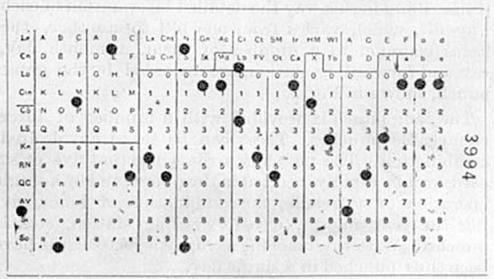

异步的历史
起初，计算机只有一个 CPU ，一个接一个地执行一组程序员编写的指令。 没有调度，没有线程，也没有多任务。这就是计算机长期以来的工作方式。 那时的程序看起来是这样的：

甚至在很早的时候，就有人研究操作系统；当 1980s 个人计算兴起的时候， 类似 DOS 的操作系统成为大多数消费者 PCs 上的标配。
这些操作系统通常把整个 CPU的控制权交给当前运行的程序， 然后由程序员决定如何让它工作、如何针对编写的程序实现各种多任务。 此时这样做是可以工作了，但是随着交互式 UIs 使用鼠标和窗口式操作系统成为常态， 上述这种模式就不再能工作了。
非抢占式多任务处理
第一种保持 UI 交互式（而且在后台进程运行）的方法叫做 非抢占式多任务处理 (non-preemptive multitasking) 。
这种多任务方式负责让 OS 处理响应鼠标之类的任务，或者在后台运行任务的控制权处于程序员手上。
一般来说，程序员将这种控制权让渡给 OS 。
这种非抢占式的方式不仅把巨大的责任推给每个在这个 OS 上编写的程序员，而且这很容易出现问题。 一个程序代码中的小错误就可能使整个系统停止或者崩溃。
要是你还记得 Windows 95 的话，你肯定不会忘了当窗口无响应 (hang) 时，你可以借此窗口绘制整个屏幕， 基本就像 Windows 自带的纸牌游戏结尾那样。
据说，这是典型的错误代码，它本应该把控制权交给操作系统。
抢占式多任务处理
虽然非抢占式听起来是个好主意，但它事实上也会产生严重的问题。 让每个程序和程序员负责获取 OS 中的响应 UI 可能最后引发很差的用户体验， 因为出现的每个 bug 都可能使整个系统停止。
解决的办法就是 抢占式多任务处理 (preemptive multitasking)： 把调度 CPU 资源的责任交给 OS ，这些资源程序和 OS 自身都需要。 OS 可以暂停一个执行中的线程，做些别的事，然后切回（继续）被暂停的线程。
在单核机器上，你可以想像一下，你写的程序运行着，OS 必须停下你的程序来更新鼠标位置， 然后切回和继续执行你的程序。这会时常发生，以至于无法判断 CPU 究竟是忙于处理很多工作，还是空闲。
此时 OS 负责调度任务，为此切换 CPU 上的上下文（即跳转任务）。 这个过程每秒会发生很多次，不仅让 UI 保持响应，而且可给其他后台任务和 IO 时间一些时间。
这就是目前主流的设计操作系统的方式。
如果你想了解更多这种线程式多任务处理，我建议你阅读之前提到的 绿色线程 这本书。 它介绍得不错，从而你可以对线程 (threads) 、上下文 (contexts) 、栈 (stacks) 、调度 (scheduling) 有基本的了解。
超线程
随着 CPU 演进，它增加了更多功能，比如 算术逻辑单元 (ALUs, Arithmetic Logic Units) 和额外逻辑单元， CPU 的生产商意识到整个 CPU 并没有被完全利用。 比如当一个操作只需要 CPU 的某些部分时，一条指令可以同时在 ALU 上运行。 这就是最初的超线程 (hyperthreading) 。
如今你的电脑比方说有 6 个核和 12 个逻辑核。正是超线程的用武之地。 超线程在同一个核上 “模拟” 了两个内核，它在线程 1 上运行代码的同时， 利用未使用的 CPU 部分来运行线程 2 上的进程。 超线程通过很多聪明的技巧（比如 ALU）做到这一点。
现在有了超线程，保持 UI 交互时，其实可以分担一部分工作到一个线程上： 在第二个线程上响应事件，从而即使只有一个 CPU，也能更好地发挥硬件的作用。
你可能好奇超线程的性能如何。
事实证明，超线程自 1990s 以来就一直被改进。 因为你其实没有在两个 CPU 上运行代码，有些操作需要等待另一个才能完成。 与单核多线程相比，超线程的所带来的额外性能似乎接近 30% ，但这很大程度上取决于工作量。
多核处理器
Multicore Processors
众所周知，处理器的时钟频率在很长一段时间内一直是平稳的。 通过改进缓存、分支预测、推测执行和在处理器的处理管道上工作，处理器的速度会更快， 但是这带来的好处似乎正在减少。
另一方面，新处理器很小，以至于同一块芯片上可以有很多处理器。 现在，大多数 CPUs 有很多核，而且每个核通常都有超线程的能力。
你编写的代码有多同步呢？
像很多事情一样，这取决于你站的角度。
从你编写的程序及其使用的线程来看，你的代码会按照编写的顺序正常执行。
从 OS 的角度看，OS 可能会也可能不会中断和暂停你的代码，同时运行一些其他的代码然后恢复你的线程。
从 CPU 的角度看，CPU 很可能一次执行这些指令 (instructions) 。 指令不关心谁写的代码，所以当硬件发生中断时，指令会立即停止， 然后把控制权交给中断处理程序 (interrupt handler) 。 这就是 CPU 处理并发的方式。
然而，现代 CPU 也可以以并行的方式做很多事。 大多数 CPU 是流水线式的 (pipelined) ，这意味着当前指令执行的时候，下个指令就准备好了。 可能有一个分支预测程序 (branch predictor) 来尝试分析下个要准备的指令是什么。
处理器也可能打乱执行顺序来重排指令顺序，如果处理器认为这样做会让指令更快执行的话， 就不会 “询问” 或者 “告知” 程序员或 OS 它已经重排了指令。 所以你可能不能保证 A 发生在 B 之前。
CPU 会分担一些工作到单独的 “协处理器” (coprocessors) 上，比如用于浮点计算的 FPU ， 从而让主 CPU 准备好执行其他任务。
从总体来看，可以把 CPU 想象成以同步方式运行，但现在请注意到，这种想象是其实不对的， 这在涉及并行、同步原语1 以及计算机与操作系统的安全时，尤为要注意。
synchronization primitives， 比如互斥锁 (mutexes) 和原子 (atomics)